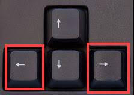
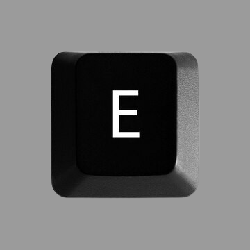

| Eskuin Ezker | |
|---|---|
| Eskueinera joateko teklak errezak dira D tekla edo ordenagailuaren eskuin azpian dagoen eskuina markatzen duen fletxarekin mugitu zaitezke, Ezkerrera joateko berriz, A tekla ikutzen edo ezkerra markatzen duen teklarekin |
 |
| Saltoak | |
| Nire jolasean saltoak egitea eskuin zein esker joatea baino errezagoa da, saltoak egiteko, asko egin behar direla E tekla sakatzearekin nahiko da. Tekla hau ikutzean pertsonaia nagusiak saltoa egingo du. |
 |
Tiroak |
| Nire jolasean tiroak egitea ere oso erraza da, gainera etsai asko daudenez tiro asko egin beharko dituzu beraiekin akabatzeko, tiroak egiteko tekla espazioa da, hau ikutzean pertsonaia nagusiak tiroak botako ditu |

|